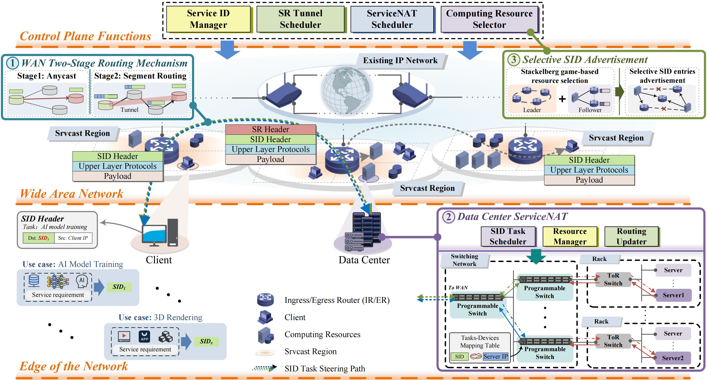
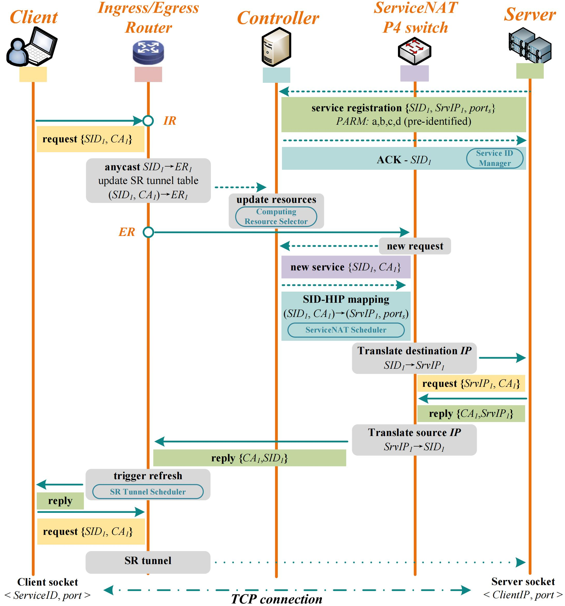
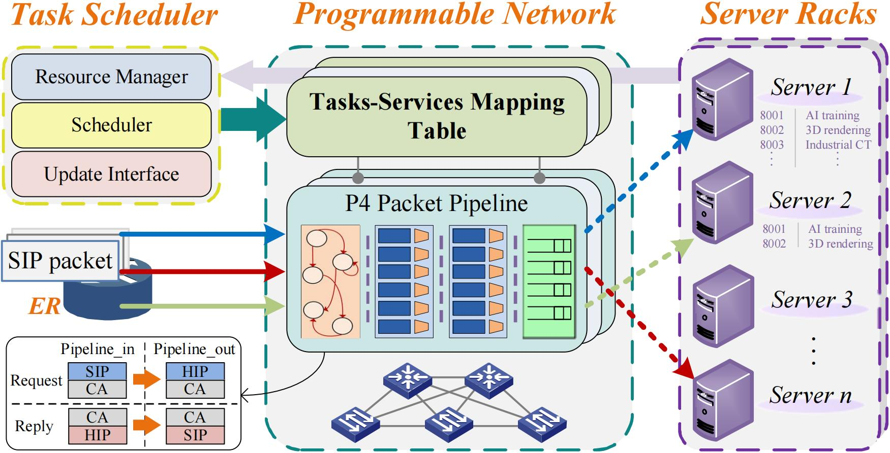

About
I am a Ph.D. student at National Engineering Research Center of Advanced Network Technologies, Beijing Jiaotong University. My research focuses on computing-aware networking, network for AI, AI for network, network addressing and forwarding mechanism, and programmable data planes.
I am interested in designing network system that coordinate computing and network resources for emerging AI applications.
Research Interests
- Computing-aware Networking and Service-oriented Routing
- Network-layer Computation-oriented Communication
- P4-based Programmable Data Plane
- Anycast, Stateful Communication, and Scalable Routing
- Edge Intelligence and AI-assisted Network Optimization
Selected Publications
Srvcast: Facilitating Host-transparent and Stateful Anycast for Computing-Aware Networks
Projects
Srvcast: Stateful and Scalable Anycast System for Computing-Aware Networks



Contact
Email: 23111018@bjtu.edu.cn, 1658858023@qq.com
GitHub: https://github.com/zhy1658858023
Google Scholar: HeyaoZhang_Scholar Profile